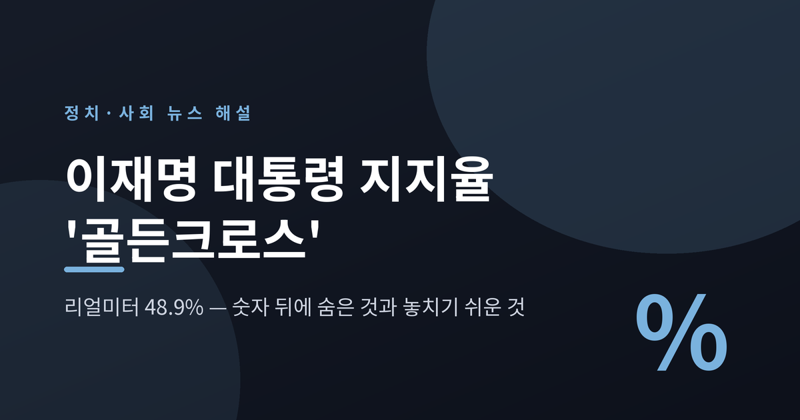
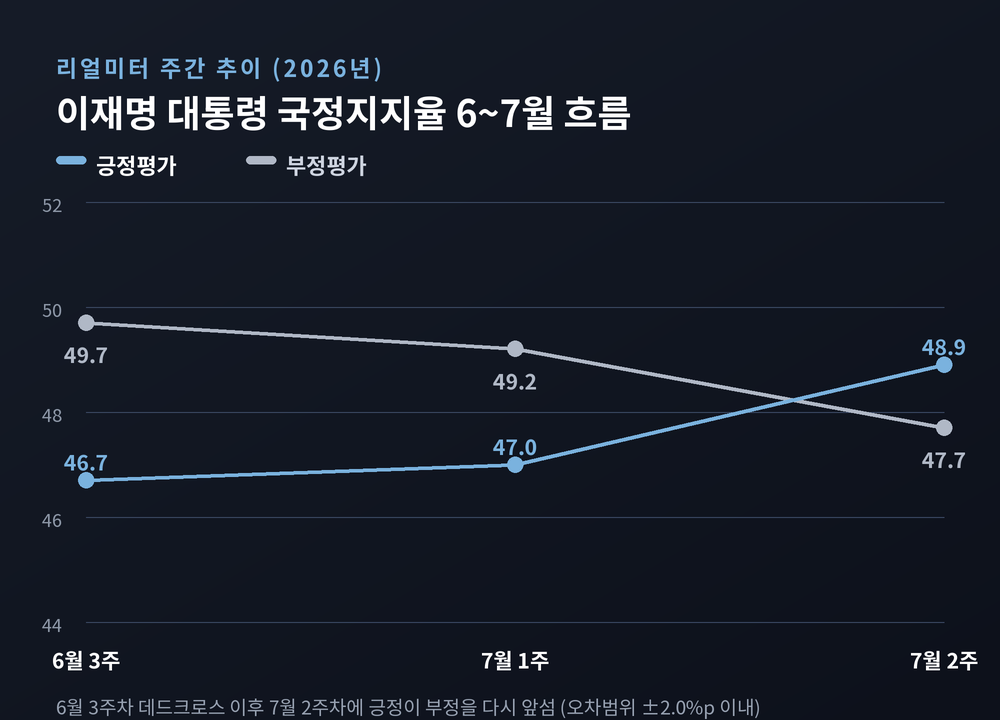
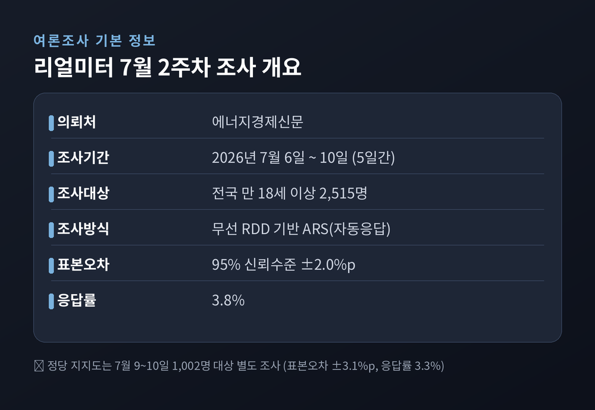
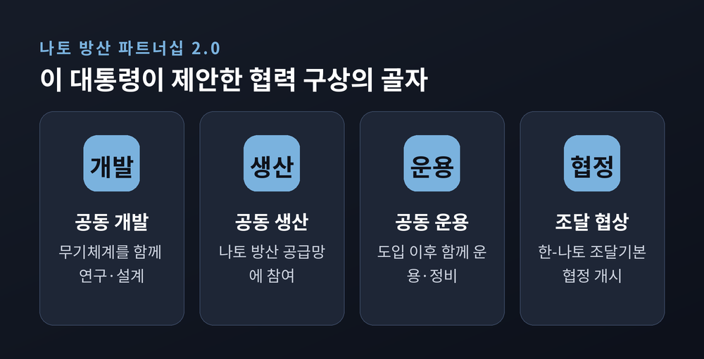
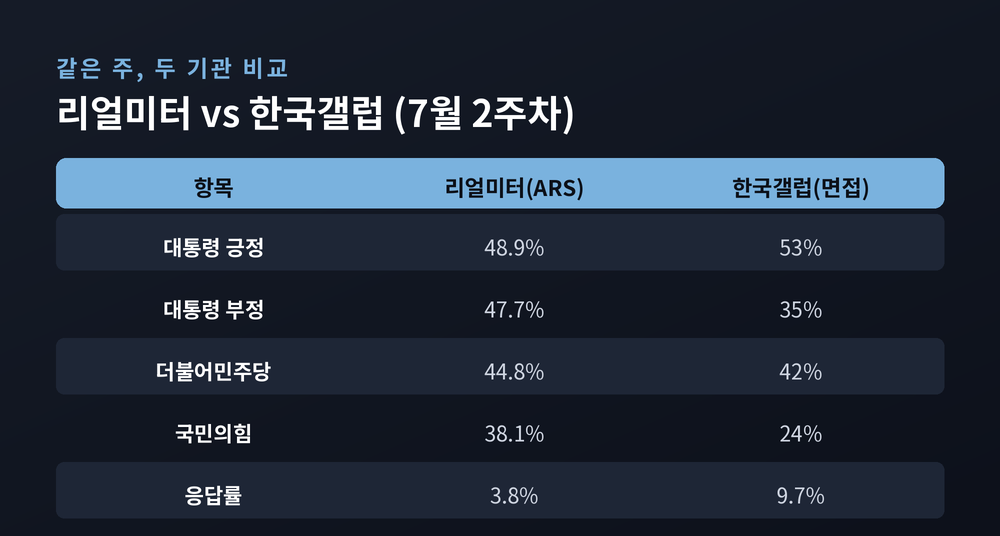
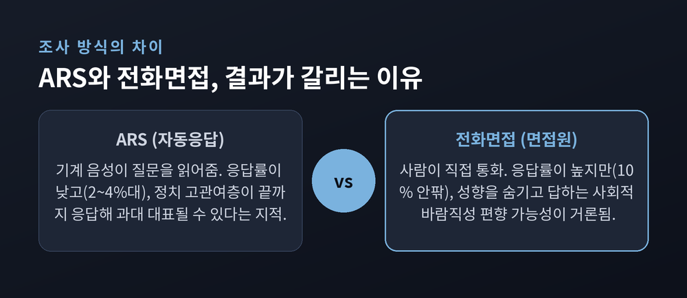
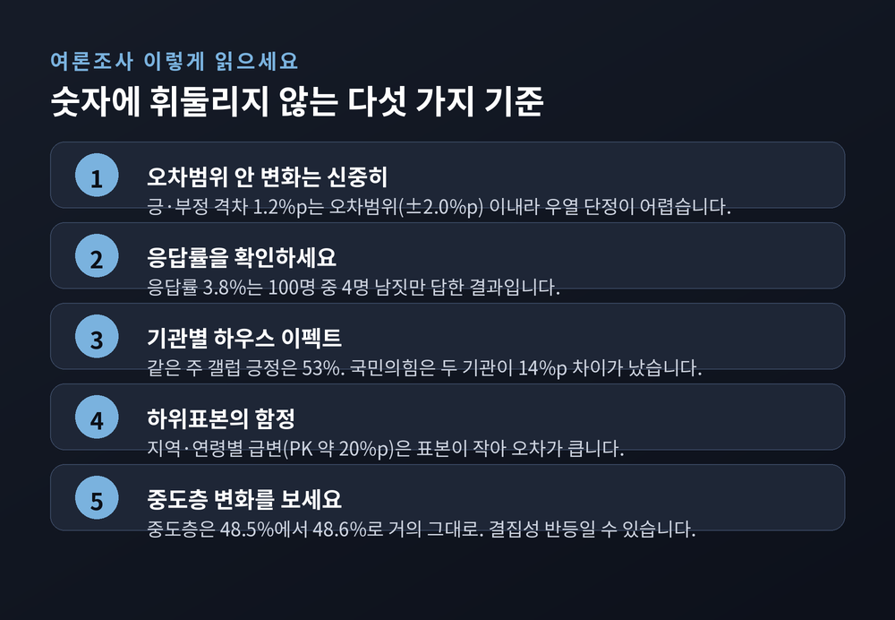

이재명 대통령 지지율 골든크로스, 리얼미터 48.9%가 말해주는 것과 놓치기 쉬운 것

이번 글에서는 2026년 7월 2주차 리얼미터 조사에서 나타난 이재명 대통령 국정지지율의 '골든크로스'를 정리해 보겠습니다. 숫자 하나에 열광하거나 실망하기 전에, 그 숫자가 어떻게 만들어졌고 무엇을 놓치기 쉬운지 함께 짚어보려 합니다. 정치 사안인 만큼 어느 편도 들지 않고, 여야 양측의 사정과 조사 자체의 한계를 나란히 놓겠습니다.

무슨 일이 있었나
리얼미터가 에너지경제신문 의뢰로 7월 6일부터 10일까지 조사한 결과, 이재명 대통령의 국정수행 긍정평가는 48.9%로 나타났습니다. 부정평가는 47.7%였습니다.
긍정은 한 주 전보다 1.9%포인트 올랐고, 부정은 1.5%포인트 내렸습니다.
지난 6월 3주차에 이 대통령은 취임 후 처음으로 부정평가가 긍정을 앞서는 '데드크로스'를 겪었습니다. 그 뒤 약 한 달 만에 다시 긍정이 앞선 셈입니다. 언론은 이를 '골든크로스'로 불렀습니다.
같은 조사에서 정당 지지도는 더불어민주당 44.8%, 국민의힘 38.1%로 집계됐습니다. 두 당의 격차는 6.7%포인트로, 오차범위 밖으로 다시 벌어졌습니다.
숫자만 보면 여권이 반등하고 야권이 주춤한 그림입니다. 다만 이 그림을 그대로 믿기 전에 확인할 것이 적지 않습니다.
조사 방법부터 정확히
여론조사 보도를 읽을 때는 숫자보다 먼저 '어떻게 조사했는가'를 봐야 합니다.
이번 대통령 국정평가 조사는 전국 만 18세 이상 2,515명을 대상으로 했습니다. 무선 RDD 표집틀 기반의 ARS, 즉 기계 자동응답 방식입니다. 표본오차는 95% 신뢰수준에 ±2.0%포인트, 응답률은 3.8%였습니다. 정당 지지도는 7월 9~10일 1,002명을 상대로 따로 조사했고, 표본오차는 ±3.1%포인트, 응답률은 3.3%였습니다.
여기서 첫 번째 함정이 나옵니다.
긍정 48.9%와 부정 47.7%의 차이는 1.2%포인트입니다. 표본오차 ±2.0%포인트보다 작습니다.
통계적으로 말하면, 이 정도 차이로는 어느 쪽이 앞선다고 단정하기 어렵습니다. 정확한 표현은 "우열을 가리기 어렵다"에 가깝습니다. '골든크로스'라는 말은 사실의 서술이라기보다 수사에 가깝다는 뜻입니다.
응답률 3.8%도 눈여겨볼 대목입니다. 전화를 받은 100명 가운데 4명 남짓만 끝까지 답했다는 의미입니다. 답하지 않은 나머지가 응답자와 같은 생각이라는 보장은 없습니다.

리얼미터는 왜 올랐다고 봤나
리얼미터는 상승 요인으로 외교·안보 성과를 꼽았습니다.
리얼미터 관계자는 "나토 정상회의 참석과 연쇄 정상회담을 통해 한·나토 방위산업 파트너십을 격상하고 방산 수출 확대의 발판을 마련한 점"을 상승 배경으로 설명했습니다.
이 대통령은 튀르키예 앙카라에서 열린 나토 방산포럼에서 초청국 정상 가운데 유일하게 기조연설을 했습니다. 그 자리에서 '한-나토 방위산업 파트너십 2.0'을 제안했습니다. 무기를 파는 데 그치지 않고 공동으로 개발하고 생산하고 운용하자는 구상입니다. '한-나토 조달기본협정' 협상 개시도 공식화했습니다.
물론 평가가 한 방향은 아닙니다. 한 신문은 사설에서 방산 세일즈 중심의 외교가 안보 협력이라는 더 큰 그림으로 나아가야 한다고 주문했습니다. 성과를 인정하는 시선과 한계를 짚는 시선이 함께 있는 셈입니다.
한 가지 더 있습니다. 지지율 상승이 곧 외교 성과의 결과라고 단정하기도 조심스럽습니다. 여론조사 기관의 '분석'은 인과관계의 증명이 아니라 하나의 해석입니다.

야당은 왜 빠졌나 — 양측의 사정
국민의힘 지지율은 2.2%포인트 내린 38.1%였습니다.
리얼미터는 야당의 하락에 대해 "당내 계파 갈등을 둘러싼 징계 공방이 격화되고 국회 상임위 전면 보이콧이 장기화되면서 고령층과 부산·울산·경남의 민심 이탈이 커진 것으로 보인다"고 분석했습니다.
세부 수치에서는 눈에 띄는 변동도 있었습니다. 부울경에서 국민의힘 지지율이 한 주 만에 약 20%포인트 급락했다는 것입니다.
다만 이 대목은 특히 신중하게 읽어야 합니다.
지역별·연령별 수치는 전체 표본을 잘게 나눈 '하위표본'입니다. 표본 수가 작아 오차가 훨씬 큽니다. 한 주의 급변은 실제 민심의 이동일 수도 있지만, 표본이 흔들린 착시일 수도 있습니다. 한 매체는 이를 지방선거 이후 지자체장들의 활동 탓으로 볼 여지가 있다고 짚으면서도 단정하지는 않았습니다.
여당도 조용하지만은 않습니다. 앞서 6월 데드크로스의 배경으로 리얼미터가 지목한 것 중 하나가 '여당 내 당권 갈등'이었습니다. 지지율이 오른 지금도 그 갈등이 사라졌다고 보긴 이릅니다.
정리하면 이렇습니다. 여당은 외교 호재로 결집했고, 야당은 내부 문제로 흔들렸습니다. 어느 쪽도 확정된 승패가 아니라, 그 주의 사정이 숫자에 비친 것뿐입니다.
한 조사만 보면 안 되는 이유
가장 중요한 대목입니다.
같은 주, 한국갤럽 조사는 전혀 다른 그림을 보여줬습니다.
한국갤럽의 7월 2주차 조사에서 이 대통령 긍정평가는 53%, 부정평가는 35%였습니다. 리얼미터에서는 1.2%포인트 차의 살얼음판이지만, 갤럽에서는 긍정이 18%포인트 앞섭니다. 갤럽 기준으로는 '데드크로스'라는 사건 자체가 없었습니다.
정당 지지도는 격차가 더 큽니다. 국민의힘은 리얼미터 38.1%, 갤럽 24%로 무려 14%포인트가 벌어집니다.
같은 시기, 같은 국민을 조사했는데 왜 이렇게 다를까요.

ARS와 전화면접, 무엇이 다른가
핵심은 조사 방식입니다.
리얼미터는 기계가 질문을 읽어주는 ARS 방식입니다. 갤럽은 면접원이 직접 통화하는 전화면접 방식입니다.
응답률부터 다릅니다. 전화면접은 대체로 10% 안팎, ARS는 2~4%대입니다.
전문가들의 설명은 양쪽으로 갈립니다.
한편에서는 ARS가 정치에 관심이 높은 사람만 끝까지 응답해 '고관여층'이 과대 대표될 수 있다고 봅니다. 반대편에서는 전화면접의 경우 사람에게 직접 답할 때 자기 성향을 숨기고 인기 있는 쪽을 말하거나 "지지 정당 없다"고 답하는 경향이 있어, 오히려 ARS가 실제 선거 결과에 가깝다고 반박합니다.
어느 방식이 옳다는 학계의 합의는 없습니다. 분명한 것은 방식에 따라 결과가 크게 달라진다는 사실뿐입니다. 실제로 조사 방식에 따라 국민의힘 지지율이 15%포인트까지 벌어진 사례도 있었습니다.
그래서 여론조사는 한 기관의 한 숫자가 아니라, 여러 기관의 여러 주차를 겹쳐서 흐름으로 봐야 합니다.

놓치기 쉬운 신호 하나
숫자 안에도 조심할 대목이 숨어 있습니다.
전체 긍정평가는 1.9%포인트 올랐습니다. 그런데 민심의 풍향계로 꼽히는 중도층을 보면, 긍정은 48.5%에서 48.6%로 0.1%포인트 움직였을 뿐입니다.
상승분은 상당 부분 특정 연령대에서 나왔습니다. 20대에서 긍정평가가 6.8%포인트, 70세 이상에서 5.6%포인트 올랐습니다.
이 대비가 뜻하는 바는 이렇습니다. 새로 마음을 연 중도층이 늘었다기보다, 기존 지지 성향이 결집한 쪽에 가깝다는 신호입니다. 중도가 움직이지 않은 반등은 다음 주에 다시 뒤집힐 수 있습니다.
예전엔 지지율 한 주 등락에 정국이 출렁였습니다. 지금은 그 숫자를 어떻게 만들었는지 먼저 묻는 독자가 늘었습니다. 반가운 변화라고 생각합니다.

앞으로의 관전 포인트
당분간은 흐름을 지켜볼 시점입니다.
여권으로서는 외교 성과가 일회성 호재에 그치는지, 민생·경제 지표로 이어지는지가 관건입니다. 6월 하락의 배경으로 지목됐던 자산시장 양극화나 당권 갈등이 다시 부각되면 반등은 오래가기 어렵습니다.
야권으로서는 내부 갈등과 원내 전략을 어떻게 추스르느냐가 숙제입니다. 지지 기반의 이탈이 일시적 흔들림인지, 구조적 이완인지는 몇 주 더 지켜봐야 드러납니다.
무엇보다 다음 조사들이 중요합니다. 리얼미터의 다음 주차, 그리고 갤럽과 다른 기관의 수치가 같은 방향을 가리키는지가 진짜 신호입니다.
끝으로 한 마디만 더 드리겠습니다.
여론조사는 미래를 맞히는 예언이 아니라, 지난주의 민심을 재보는 온도계입니다. 온도계 하나가 가리키는 눈금에 일희일비할 필요는 없습니다.
"골든크로스인지 아닌지"보다 중요한 물음은 따로 있습니다. 이 숫자는 누가, 어떻게, 몇 명에게 물어서 나온 것인가.
그 질문을 먼저 던지는 독자라면, 어떤 조사 결과가 나와도 크게 휘둘리지 않으실 것입니다.
※ 본문의 여론조사 수치는 리얼미터(에너지경제신문 의뢰)와 한국갤럽 공표 자료에 근거합니다. 여론조사는 표본오차·응답률·조사방식에 따라 결과가 달라질 수 있으므로, 특정 조사 하나의 수치를 확정된 민심으로 해석하지 않도록 유의하시기 바랍니다. 자세한 조사 개요는 중앙선거여론조사심의위원회 홈페이지에서 확인할 수 있습니다.